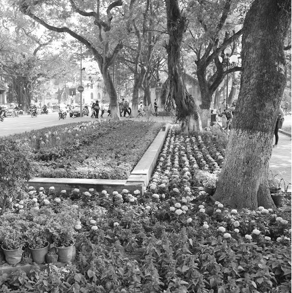

Tại sao Hà Nội lại được “đặt” vào đây?
Bởi vì bạn đang tham quan một Paris của riêng tôi.
Paris của tôi, ở bất cứ chỗ nào và bất kỳ lúc nào cũng có một khoảng rộng lớn, sâu thẳm luôn hiện hữu: nỗi nhớ Hà Nội. Nhiều khi tôi tự hỏi nó là cái gì. Đêm về, nó có khi là tảng đá nặng trĩu đè trên ngực, là đám mây bồng bềnh trong những giấc mơ, lại có khi là con chấy nấp dưới gối, đợi mình mơ màng thì chui sâu vào trong tóc, cắn mình ngứa phát điên lên.
Paris cái gì cũng to, cũng đẹp hơn Hà Nội, mà rốt cuộc chẳng có gì bằng Hà Nội. Là vì tôi cứ muốn so sánh những cái không thể, cứ hỏi những câu ngớ ngẩn kiểu: “Sao sông Seine không cuộn đỏ phù sa?” hay “Sao Paris không có tháp rùa đứng giữa Hồ Gươm?”
Từng nhiều lần viết về Hà Nội nhưng tôi chưa bao giờ ưng ý. Tôi đã định không bao giờ viết nữa.

Hà Nội. (Ảnh: Tác giả)
Nhưng không phải là viết. Là một sáng nắng đẹp, nghe một bản nhạc nào đó, có piano đệm, có tiếng chuông thánh thót, có tiếng violon réo rắt và những nốt chữ tuôn ra từ trong lòng, tuôn đầy hai tay tràn xuống bàn phím, ngập lên mắt, ngập lên màn hình. Như thể nếu không trào ra thì tim phổi lòng dạ sẽ bị ngập hết cả.
Đó không phải là kỷ niệm, là những cái móc sắt một đầu móc vào quá khứ, đầu kia móc vào da thịt, là cái cách để bấu víu vào những tiềm thức xa xôi, sợ rằng cuồn cuộn thời gian sẽ cuốn mình đi. Đau đớn cũng là một cách giải thoát, hay để xả bớt năng lượng, để tìm lại bình yên: cảm giác đau đớn mạnh hơn, vượt qua cả những lo toan cuống cuồng.
Đó không chỉ là những êm đềm lơ đãng, là cả những điên cuồng giằng xé, những khắc khoải tuyệt vọng, và cả hy vọng nữa.
Đó không phải đoạn văn một chiều mà là cuộc đối thoại với chính mình ở đầu bên kia nỗi nhớ.
Hà Nội bảo: Mày viết làm gì thế, cứ ôm trong lòng thôi.
- Ôm mãi rồi, ôm không nổi, nặng muốn chết.
- Làm gì mà rùm beng lên, ai bảo đi.
- Tim đâu có đi, là chân đi thôi.
- Chân *** gì, tâm hồn, tim gan cũng đi hết cả. Bụi Hà Nội mày cũng mang theo trên giày mày đi ấy.
- Mày lại nói bậy thế?
- Thì thời buổi bây giờ, không nói bậy, quê thấy bà cố.
- Nhưng Hà Nội thì không nói bậy.
- Bởi thế mới bảo đừng viết nữa, đau lắm!
- Là tao viết về mẹ tao.
- Thì cũng vậy, cũng là một, mà mẹ mày thế nào?
- Mẹ tao yêu thương tao, cả đời lo cho tao. Nhớ tao, mẹ tao khổ.
- Thế cơ à, nẫu.
- Mẹ mày cũng thế, ai cũng có một người mẹ như thế, ít hay nhiều.
- Thôi đừng nói, đừng nhắc đến mẹ. Người ta lại phải giả dối.
- Sao phải giả dối?
- Thì hoặc là đồng cảm, phải rưng rưng xúc động, mà thế thì “quê”, thì “sến” nên mặt phải giả vờ tỉnh bơ. Còn thằng nào không đồng cảm, nó lại phải tỏ ra đồng ý, giả dối hết.
- Phức tạp thế à?
- Ừ, mẹ kiếp.
- Là mày nhắc đấy nhé, không phải tao.
- Nhắc gì, là tao nói bậy thôi.
- Tại sao người ta nói tiếng đầu đời là gọi mẹ, đêm ngủ nằm mơ, lúc đau ốm vô thức cũng gọi mẹ, lúc vô ý văng tục ra cũng gọi mẹ, mà khi có ý thức, có chủ ý lại tệ bạc, lại hờ hững?
- Ờ nhỉ. Nhưng mẹ cũng có lúc tệ, vô tâm, chả theo ý mình, cũng có khi nói bậy…
- Nhưng mà tao yêu mẹ, mày cũng thế, sâu thẳm trong lòng mình ai cũng thế.
- Vậy sao?
- Tao yêu mày nữa, mày nói yêu tao đi.
- Của nợ, ngượng chết.
- Văng tục thì không ngượng, nói yêu phải ngượng à? Cũng như ở Hà Nội người ta đái bậy thì ngang nhiên, mà hôn phải giấu giếm.
- Ờ nhỉ. Tình yêu là gì nhỉ?
- Không biết, chỉ biết yêu thôi.
- Là mày yêu tao thôi, tao chả yêu mày đến thế…
Tình yêu thật khó diễn tả. Chẳng ai biết tim liêu xiêu, nhớ nôn nao là gì. Nhưng ai cũng biết cái cảm giác tim đập dồn dập, nghẹn cả thở, bụng thắt lại, thần kinh căng ra chỉ vì nhìn thấy một người, thế là yêu à?
Yêu Hà Nội thì không đến như thế, nhưng cũng hồi hộp khi máy bay hạ cánh: mình sắp được gặp nó, cũng hớn hở thấy nó đổi thay, nó đẹp hơn, cũng đau đớn thấy nó xuống cấp tệ hại.
Mình yêu nó, đơn phương, chứ nó yêu gì mình.
Hà Nội như cô tiểu thư đài các, dịu dàng, duyên dáng, hấp dẫn gợi tình, nói chung là đủ phẩm chất khiến bao gã trai trồng cây si, làm sao mà đáp lại hết? Với các cô gái, Hà Nội hiện lên oai phong, trầm hùng, bao dung, độ lượng mà sâu sắc. Hà Nội như người đàn ông từng trải mà vẫn tươi trẻ, đằm thắm mà sôi nổi, dễ khiến trái tim các cô gái say mê.
Hà Nội là gì nhỉ? Mình yêu Hà Nội mà chẳng biết nó có yêu lại mình không?
Mùa hè, nó thổi hoa phượng cháy rực lên, ve kêu râm ran làm mình nhớ tuổi thơ, tuổi cắp sách, tuổi ô mai, tuổi trốn học, tuổi mới yêu, đã cầm tay con người ta kéo vào lòng rồi mà không dám hôn một cái, tiếc muốn chết. Thế mà năm nào nó cũng thổi hoa cháy bừng lên cho mình tiếc nữa, chắc nó ghen. Nó cuồn cuộn sóng sông Hồng sôi sục đỏ như máu, dữ dội, nắng đốt lửa trên đường. Ấy là khi nó giận.
Mùa thu, nó nhuộm lá đỏ lá vàng, gió hiu hiu đượm mùi cốm, nó tạo cảnh hữu tình dụ mình đi dạo phố để rắc lá, rắc cả nắng vàng lên vai mình, nó dụ tình đến thế, để mình yêu nó. Đêm đến thì nó nồng nàn hoa sữa, thứ nước hoa hay sữa tắm đặc biệt, chẳng lẫn đi đâu được, chỉ ngửi thấy mùi ấy, nhắm mắt lại là thấy những con phố miên man, e ấp như cặp chân dài thẳng tắp, gợi tình. Để quyến rũ mình. Thế mà sáng mai nó thản nhiên như không, nó tưng bừng xách cặp đi khai trường.
Mùa đông thì nó đanh đá. Hôm trước vẫn còn ấm áp, chỉ một đêm không vừa ý, nó đổi gió mùa, hôm sau là nó tê tái, nó luồn vào da thịt mình mà cắn, rồi lại hôn mình đến rách cả môi, rớm máu. Phố ngơ ngác những thân cành trơ trụi, và phố liêu xiêu đứng run run trong gió heo may, làm mình thương nó đến rưng rưng. Nó thì thản nhiên ngồi nhắm mực nướng, ngô nướng trong lòng phố cổ, nó ngồi canh nồi bánh chưng hai má đỏ hồng lên. Rồi lại lạnh lùng, đến rùng mình.
Mùa xuân nó nở hé vườn hồng, nó trải bụi mưa trên mỗi cánh hoa e ấp. Nó trong trắng tinh khôi như con gái mới lớn còn chưa hôn lần nào. Nắng nháy mắt lấp lánh cười tình, áo hoa nhộn nhịp trên phố. Sôi động, hớn hở trẻ trung đầy sinh lực, nó cuốn mình vào nhịp sống của nó, vào vòng xoay của nó, không có cách nào thoát ra.
Thế mà nó nhất định không chịu nói yêu mình. Còn mình không biết là mình viết về nó hay viết về chính mình, chính tình yêu của mình….
Hà Nội bảo: Mày toàn nhớ những thứ linh tinh, những thứ xưa rồi.
- Thế à, thế Hà Nội bây giờ thế nào, chẳng nhẽ không có bốn mùa?
- Có chứ, nhưng người ta bận bịu hơn, chẳng ai mơ mộng thả hồn như mày nữa. Mùa nào thì cũng xe hơi, điều hòa, phố nào cũng ngột ngạt xe, mờ mịt bụi. Người ta ít để ý hoa sữa, hương cốm, chỉ chuộng Channel, Dior…
- Thế bây giờ còn ai yêu Hà Nội không?
- Ai biết được, đi mà hỏi người ta. Còn mày nữa, hỏi gì lắm thế, ngồi đấy mà thơ với ca. Đời không “thơ” như thế đâu. Yêu lắm à, hỏi một câu thôi nhé: mày làm được gì cho tình yêu của mày chưa?
…..
- Hỏi gì khó thế, ờ nhỉ, tao làm gì? Thôi, tao viết mấy dòng thôi…